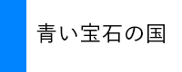
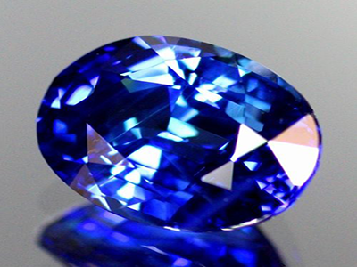
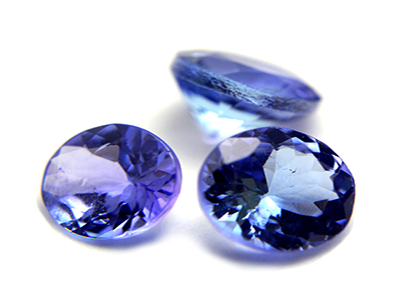

Sapphire サファイア
三方晶系
Al2O3、酸化アルミニウム
タイ王国、ミャンマー、カシミール地方、スリランカ、マダガスカル、オーストラリア、中国、カンボジアなどで採掘される。
ダイヤモンドに次ぐ硬度

Tanzanite タンザナイト
斜方晶系
Ca2AlAl2(Si2O7)(SiO4)O(OH)
タンザニア付近で採掘されたゾイサイトを特にタンザナイトを呼ぶ。
石言葉は、「高貴・冷静・空想」